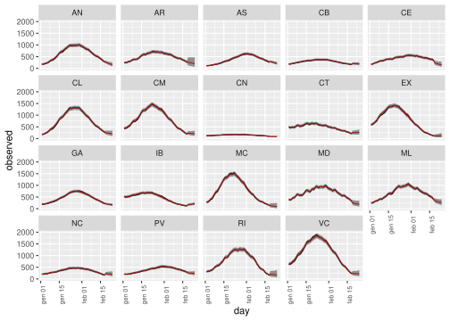
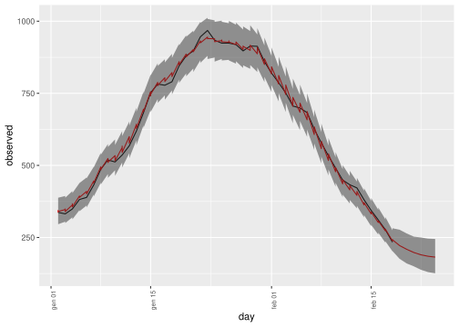

5 Results on available data
These are the prediction of the incidence given the observed data: posterior predictive and prior predictive (according to the LSTM “expert” elicitation).
5.1 Incidence by region
For each region here is the observed incidence along with predictive posterior summaries: median (red) and 95% credible intervals (grey):
toplot=subset(final.res,day>as.Date("2021-01-01"))
pmax=ggplot(toplot,aes(x=day,y=observed))+geom_line()+
geom_line(aes(x=day,y=median),colour="red")+
geom_ribbon(aes(x=day,ymin=ici,ymax=sci),alpha = 0.5)+
facet_wrap(. ~ region)+
theme(axis.text.x = element_text(angle = 90,size=rel(0.8)))
pmax
## svg
## 25.2 Incidence for Spain
The same as above but for all Spain in which regions are weighted according to their population.
final.res.spain=round(final.res[c("observed","ici","median","sci")]*pop$w[final.res$region],0)
final.res.spain=aggregate(final.res.spain,by=list(day=final.res$day,delay=final.res$delay),sum)
toplot=subset(final.res.spain,day>as.Date("2021-01-01"))
pmax=ggplot(toplot,aes(x=day,y=observed))+geom_line()+
geom_line(aes(x=day,y=median),colour="red")+
geom_ribbon(aes(x=day,ymin=ici,ymax=sci),alpha = 0.5)+
theme(axis.text.x = element_text(angle = 90,size=rel(0.8)))
pmax
## svg
## 2